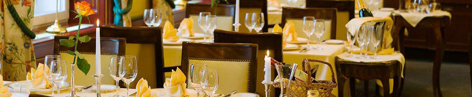
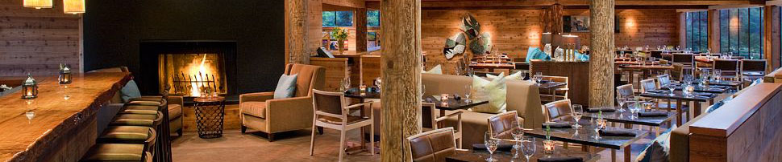
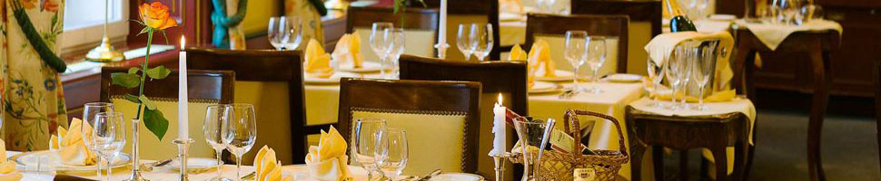
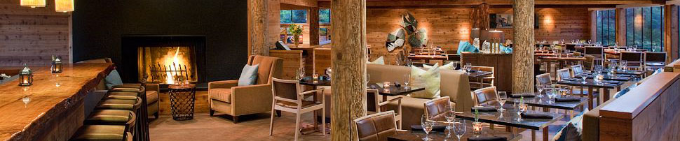

Управление конфликтными ситуациями
При предоставлении услуг в заведениях HoReCa периодически возникают сложные (конфликтные) ситуации с гостями. Причины их возникновения могут быть как объективными (ошибка персонала), так и субъективными (плохое настроение гостя, провокация).
В случае предъявления претензии, независимо от причины её возникновения и объективности, персонал в обязательном порядке
приглашает администратора. Администратор должен быть наделён правами принимать решения в подобных ситуациях. При этом главным приоритетом для Администратора должен быть гость и соблюдение его прав, как потребителя.
…
Читать далее »
Приём заказа на банкет
Банкет (День рождения, юбилей, корпоратив и др.) – это праздник, который с нетерпением и радостью ждёт каждый гость.
Поэтому задача сотрудников заведения сделать это событие весёлым, лёгким и незабываемым как для заказчика торжества, так и для его гостей
Чтобы праздник удался, необходима серьёзная предварительная подготовка.
Именно поэтому прием заказа является важным этапом при организации банкета, поскольку в нем подробно и своевременно продуманы и согласованы все условия и порядок проведения праздника между его устроителями (заказчиками) и администрацией заведения.
Заявку на проведение банкета принимает:
- администратор
- менеджер ресторана
…
Читать далее »


 


